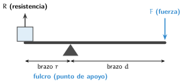
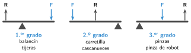
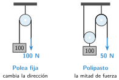

Máquinas simples y mecanismos
🤔 Pienso5 min
Qué hago aquí: Piensa un momento y contesta con lo que ya sabes. No pasa nada si no lo sabes: es para empezar.
Apoya una regla sobre un lápiz. Pon una goma en un extremo. Empuja el otro extremo con el dedo. ¿Cuesta menos empujar cerca del lápiz o lejos?
📖 Leo y aprendo20 min
Qué hago aquí: Lee despacio, mira los dibujos y los ejemplos, y quédate con la idea clave del final.
Un motor gira. Pero un robot necesita levantar, agarrar o empujar. Para eso usa mecanismos.
La palanca es una barra que gira sobre un punto de apoyo, el fulcro.

Tipos de palanca. Depende de qué está en el medio.

La polea es una rueda con una cuerda. Una polea fija solo cambia la dirección. Con dos poleas haces la mitad de fuerza.

✏️ Hago20 min
Qué hago aquí: Haz las actividades en orden. Empieza siempre por las básicas.
Escribe el nombre de cada parte: el punto de apoyo es el ; lo que levantas es la .
Di de qué grado es cada palanca: tijeras, carretilla, pinzas de cocina.
Una caja de 200 N está a 1 m del fulcro. Empujas a 4 m. Calcula la fuerza.
F· 4 = 200· 1 ⇒ F =
Vuelve a la regla de Pienso. ¿Dónde empujaste con menos fuerza? ¿Por qué?
✏️ Puedes responder escribiendo, con un dibujo o un esquema, o contándolo en voz alta.
Una piedra de 600 N está a 0,5 m del fulcro. Empujas a 1,5 m. ¿Qué fuerza haces?
🚀 Amplío (si quieres saber más)
Qué hago aquí: ¿Has terminado? Lee la curiosidad o elige el reto. Es voluntario.
La pinza de muchos robots es una palanca de tercer grado. Dibuja una pinza y marca el fulcro, la fuerza (el motor) y la resistencia (el objeto).
✅ Compruebo5 min
Qué hago aquí: Contesta sin mirar la ficha y marca cómo lo llevas.